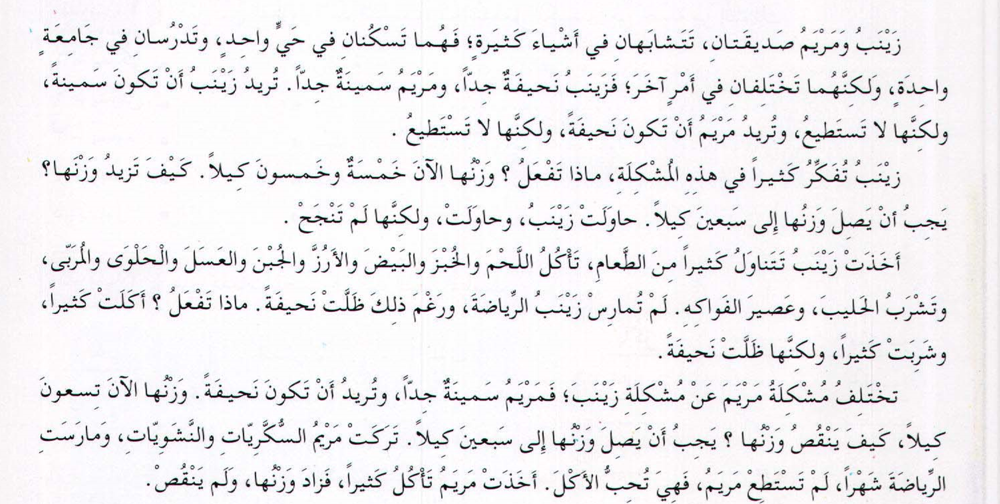
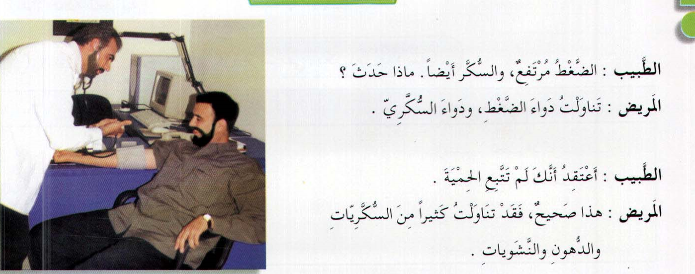
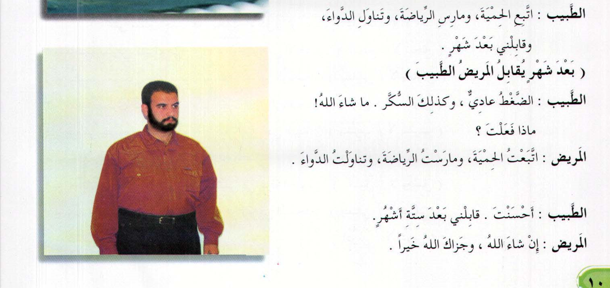
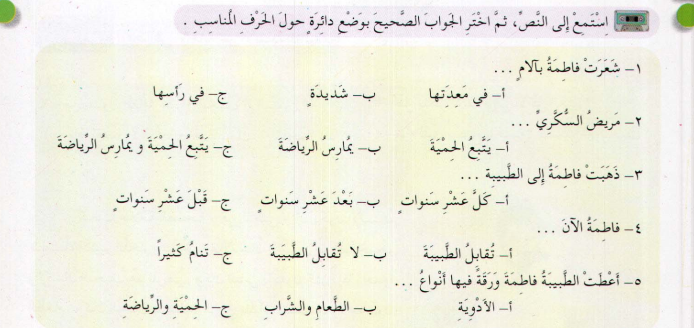

Слова
- عِنَايَةٌ - забота, уход
- العِنَايَةُ بِالصِّحَّةِ - забота о здоровье
- عَسَلٌ - мёд
- شَفَى - يَشْفِي - вылечивать, исцелять
- شِفَاءٌ - исцеление
- أَلَمٌ / آلاَمٌ - боль
- مَعِدَةٌ - желудок
- بَطْنٌ - живот
- شَدِيدٌ / شِدَادٌ - сильный
- تَنَاوَلَ - يَتَنَاوَلُ - принимать лекарство
- تَنَاوُلٌ - прием
- دَوَاءٌ / أَدْوِيَةٌ - лекарство
- قِصَّةُ الصَّحَابِيِّ - рассказ сподвижника
- عَالَجَ - يُعَالِجُ - лечить lll
- عِلَاجٌ - лечение
- عِنْدَمَا - когда, в то время, как..
- اِشْتَكَى - يَشْتَكِي - жаловаться (من) Vlll
- سَقَى - يَسْقِي - поить
- لَقَدٌ - уже (частица ставится перед глаголом пр. времени)
- أَمَرَ - يَأْمُر - приказывать (ب)
- أَمْرٌ / أَوَامِرُ - приказ
- مَرَّةٌ / مَرَّاتٌ - (один) раз
- مِثْلَ - подобно
- مَحَلٌّ / مَحَلاَّتٌ - место
- بَيْعٌ - продажа
- مَرْكَزِيٌّ - центральный

Слова
- صَدِيقَةٌ - подруга
- تَشَابَهَ - يَتَشَابَه - походить друг на друга
- شَىْءٌ / أَشْيَاءُ - вещь
- اِخْتَلَفَ - يَخْتَلِف - быть различным
- فَكَّرَ - يُفَكِّرُ - думать
- مُشْكِلَةٌ / مُشْكِلاتٌ - проблема
- نَقَصَ - يَنْقُص - уменьшаться
- زَادَ - يَزِيدُ - увеличиваться
رَغْمَ ذَلِكَ - несмотря на это
ظَلَّ - يَظَلُّ - оставаться
- حَاوَلَ - يُحَاوِلُ - пытаться
- وَصَلَ - يَصِلُ - достигать
- نَجَحَ - يَنْجَحُ - преуспевать
- مَارَسَ - يُمَارِسُ - заниматься
- رِيَاضَةٌ - спорт
- حَلْوَى - сладости
- مُرَبَّى - варенье
وَجَبَ - يَجِبُ - быть обязательным
نَشَوِيَاتٌ - крахмальные (мучные) изделия
- جُبْنٌ - сыр




Слова
- حَدَثَ - يَحْدُثُ - случаться
- اِرْتَفَعَ - يَرْتَفِعُ - подниматься
- اِعْتَقَدَ - يَعْتَقِدُ - быть убежденным (в чем-л.) Vlll
- دُهُون - жиры (мн.ч)
- مَشْغُولٌ - занятый
- دَائماً - всегда, постоянно
- حَالٌ - состояние
- خَطِيرٌ - опасный
- كَفَى - يَكْفِي - хватать
- لابُدَّ - необходимо
- اِتَّبَعَ - يَتَّبِعُ - следовать
- حِمْيَةٌ - диета
- عَادِيٌّ - нормальный
- أَحْسَنْتَ - молодец (ты)
- جَزاكَ اللهُ خَيْراً - да воздаст тебе Аллаh благом!

СЛОВА
- المَاضِ - прошлое (время)
- الحَاضِرُ - настоящее (время)
- عَلاَمَةٌ - признак
- شَحْمٌ - жир
- اِبْتَعَدَ - يَبْتَعِدُ - удаляться, уходить, покидать (عن) Vlll
- حَذَّرَ - يُحَذِّرُ - предостерегать ll
- تَقَدَّمَ - يَتَقَدَّمُ - развиваться, прогрессировать V
- زَوَاجٌ - брак
- فَضَّلَ - يُفَضِّلُ - предпочитать ll
- مَرْأَةٌ - женщина
- ظَهَرَ - يَظْهَرُ - выявляться, обнаруживаться ll
- أَمْرَاضُ القَلْب - болезни сердца
- ضَغْطُ الدَّمِ - кровяное давление
- بَدَانَةٌ - полнота
- شَخْصٌ - человек, персона
- أَصْبَحَ - يُصْبِحُ - становиться, делаться lV
- كَامِلٌ - полный
- دَسَمٌ - жир (продукты)
- أَسْمَرُ - темный, коричневый
- نَهَى - يَنْهِي - запрещать
- إِسْرَافٌ - расточительство
- ضَرَّ - يَضُرُّ - вредить ll
- وِعَاءٌ - сосуд
- شَرٌّ - плохой, злой
- شَرٌّ مِنْ - хуже чем
- آدَمِىّْ - живое существо, человек
- مَلأَ - يَمْلَأُ - наполнять (ب)
- حَسْبٌ - достаточность
- صُلْبٌ - позвоночник
- أِنْ كَانَ لَا مَحَالَةَ - если будет необходимо; если понадобится
- ثُلْثٌ - треть
- لِنَفْسٍ - для (самого) себя